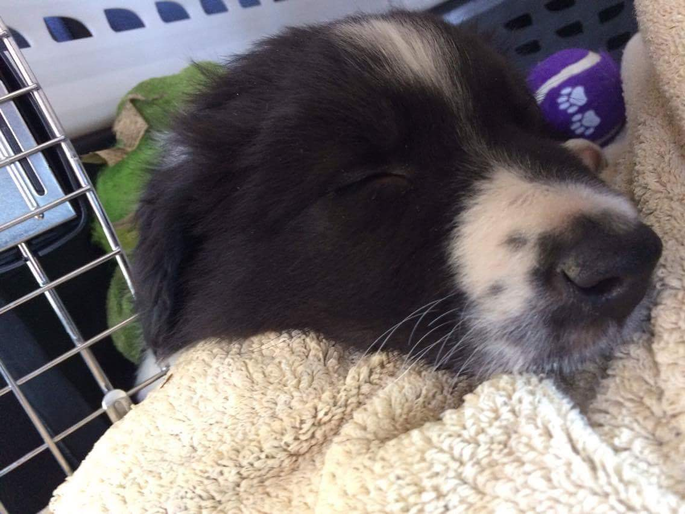
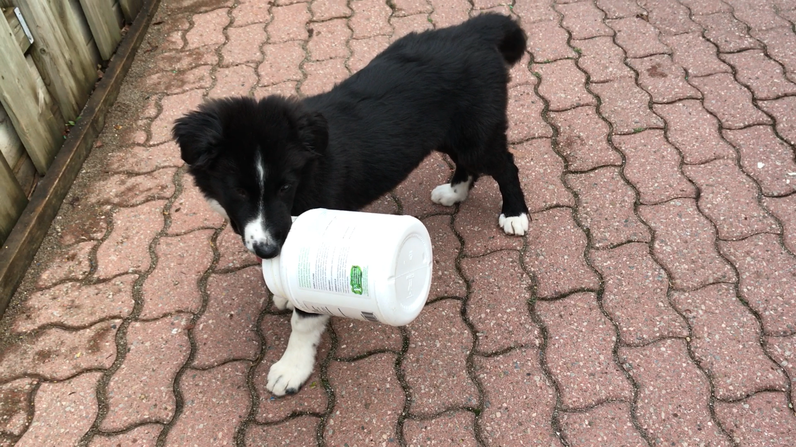

In February of 2017‚ my family bought a border collie from a breeder in Kingston. I absolutely fell in love with them when I went to see them for the first time. The puppies were so tiny and absolutely adorable.
It was a tough decision to choose which puppy we wanted‚ but when we first arrived‚ I knew Oreo was the one for our family. Oreo was the first one that greeted us as we entered the shed‚ and he did so by nipping my boot laces. I also have a fond memory of him constantly going to sleep‚ drinking alot of water‚ and eating alot of food.
On March 18th‚ after getting all his puppy shots at the clinic‚ we went back to Kingston and brought him back to our house. Those first few nights were hard to go to sleep in because his constant cries for his mother kept our whole family awake. After a while‚ his crying stopped and he began to get used to the environment. We brough him outside sometimes and while there was still snow‚ he stepped into it with his miniature paws. The first few weeks of having him a part of our family was very entertaining. Oreo did such despicable things‚ yet acted so innocent. He would grab toilet paper and tear it into so many pieces; dissect his stuffed toys into millions of shreds; jump out of his playpen. Although his acts were maleficent‚ he was my best friend‚ and still is to this day.
I would say potty training Oreo was the most difficult thing to do. We tried to train him indoors but instead of peeing on the newspaper we provided for him‚ he shredded them and made our house an absolute catastrophe. He also went to do his business on the floor all over the house: on the first floor and the second floor! After a few weeks of trying‚ a lightbulb turned on and we decided to let him try to go to the bathroom outside‚ on the pavement. It worked! To this day‚ Oreo has been doing his business outside on the pavement in our backyard. Although it is better than doing it inside the house without the newspaper‚ our family definitely regrets the fact that we didn't train him to do it outside on other people's lawns. Everyday‚ when we walk Oreo outside of our backyard‚ he never uses the bathroom there but only goes the minute we arrive back home. This has been a really bad habit because day by day‚ week by week‚ month by month‚ our backyard smells worse and worse from all of his bathroom breaks.
Another problem that we've encountered was Oreo eating his poo. After doing some research‚ I found out that he was doing this disgusting act because his nutrition levels weren't high enough.
Apart from those two problems‚ Oreo is definitely an extremely intelligent and attentive learner. Before getting Oreo‚ our family took care of a golden retriever and she was much slower at learning tricks than Oreo was. Within the first two months of having Oreo‚ Oreo had mastered the following:
At this point‚ my little sister and I are teaching him how to “wave” and catch a frisbee.
Oreo is now nine months old and is striving. He knows how to do all those tricks and knows how to catch tennis balls thrown at any height‚ as long as there is a bounce. I love Oreo and he is always the one that lightens our whole family's mood.
To watch the growth of Oreo‚click here.